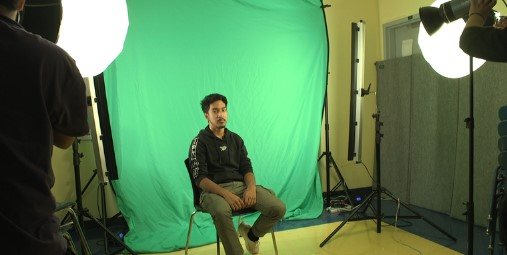

From the Hawks Themselves...
Join our CTE departments today!
In this post, I'll be explaining which academy does what, and from there on you should choose one that best aligns with your career goals/interests!
At ITHS, we prioritize your future career goals. When choosing your CTE major here in high school, they should best fit YOU as a person both in and outside of the career path you take.
Video Production
Creative industries today offer a variety of career paths, each catering to unique skills and interests. Among these, video production stands out as a dynamic field, combining technical expertise with storytelling to create compelling content.
A career in video production can lead to diverse opportunities across industries, from entertainment and advertising to education and social media. Professionals in this field may start as video editors, camera operators, or production assistants and eventually move into roles such as producers or directors. Many students are drawn to this path because of its blend of creativity and technology, allowing them to work on everything from commercials and music videos to documentaries and feature films. With the growing demand for video content in digital marketing and online platforms, video production offers a promising and ever-expanding career path.
Web Design
The digital age has made web design an essential skill for creating and maintaining an effective online presence. As a career, it combines creativity with technical expertise to build visually appealing and user-friendly websites that connect businesses, organizations, and individuals with their audiences.
A career in web design offers a wide range of opportunities in industries like technology, marketing, and e-commerce. Web designers may start by creating basic layouts or templates and eventually grow into specialized roles such as user experience (UX) designers, front-end developers, or creative directors. They use coding languages like HTML, CSS, and JavaScript to help produce this. An example of the code students can make with the knowledge of this class is shown.
Don’t Miss Out!
Many students are drawn to this field because it blends artistic design with problem-solving and coding skills. As businesses increasingly rely on strong online platforms to succeed, web design continues to be a sought-after and rewarding career path.
Graphic Design
Creative industries provide numerous opportunities for individuals with an eye for aesthetics and a passion for visual storytelling. Graphic design is one such field that merges creativity and technology to craft visually appealing and impactful designs.
A career in graphic design opens doors to roles in branding, advertising, web design, and print media. Graphic designers often begin as junior designers, creating logos, brochures, or social media graphics, and can advance to roles such as art directors or creative leads. Many students are attracted to this field because it allows them to bring ideas to life through color, typography, and imagery. With the rise of digital marketing and the constant need for visually engaging content, graphic design remains a versatile and in-demand career path.
Debate on CTE Funding
At ITHS, we've gotten new funding- but we also need to think about which CTE academy should get the current funding as of right now. Let's see what opinions students at ITHS have to say.
First Claim
When deciding how to allocate funding, many believe that web design should be the top priority because of its importance in establishing a strong online presence. A well-designed website serves as the first impression for users and can significantly impact credibility and user engagement. Students often argue that investing in web design ensures better functionality and accessibility, making it easier for people to navigate and interact with the site. This, in turn, attracts more visitors and boosts the overall success of any project or organization.
Counter Claim
However, others think that video production deserves the funding because of its ability to captivate audiences in ways that static content cannot. Videos are a dynamic and engaging medium, ideal for storytelling and promoting ideas or products across various platforms. Other students say that videos can evoke emotions, explain complex concepts quickly, and leave a lasting impression on viewers. They believe that focusing on video production can help organizations connect with audiences more effectively and enhance their digital presence.
Final Claim
Still, some students feel that graphic design should not be overlooked, as it plays a key role in visual communication. They argue that strong, professional graphics are essential for branding and can make any website or video look polished and cohesive. However, many agree that graphic design is most impactful when paired with either web design or video production. Ultimately, while all three areas are important, deciding where the funding goes depends on the specific goals and audience of the organization.
TO BE ADDED...
Cum sociis natoque penatibus et magnis dis parturient montes, nascetur ridiculus mus. Aenean lacinia bibendum nulla sed consectetur. Etiam porta sem malesuada magna mollis euismod. Fusce dapibus, tellus ac cursus commodo, tortor mauris condimentum nibh, ut fermentum massa justo sit amet risus.
- Praesent commodo cursus magna, vel scelerisque nisl consectetur et.
- Donec id elit non mi porta gravida at eget metus.
- Nulla vitae elit libero, a pharetra augue.
Etiam porta sem malesuada magna mollis euismod. Cras mattis consectetur purus sit amet fermentum. Aenean lacinia bibendum nulla sed consectetur.
Donec ullamcorper nulla non metus auctor fringilla. Nulla vitae elit libero, a pharetra augue.